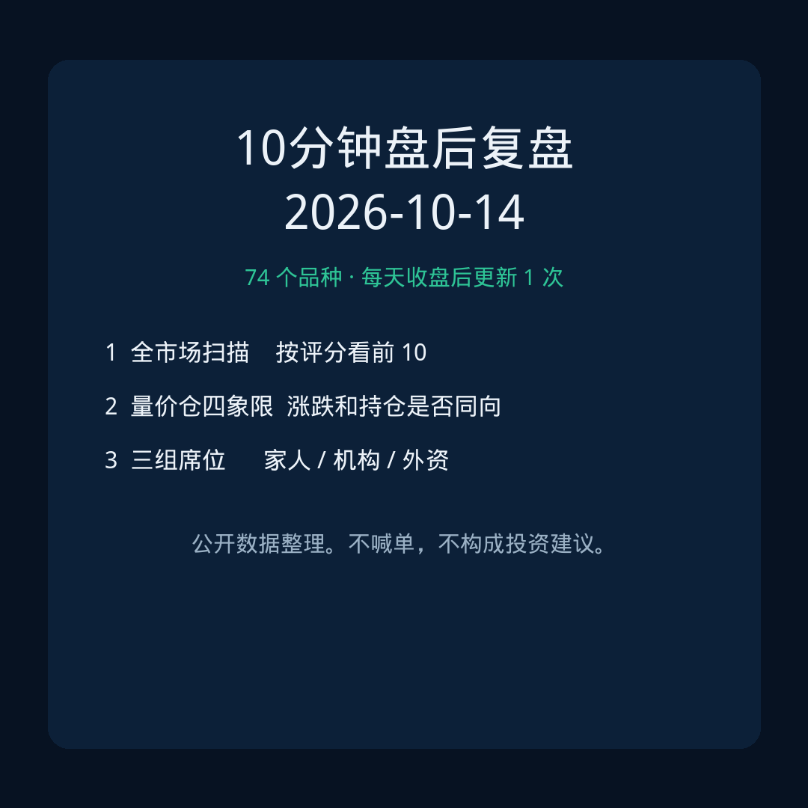
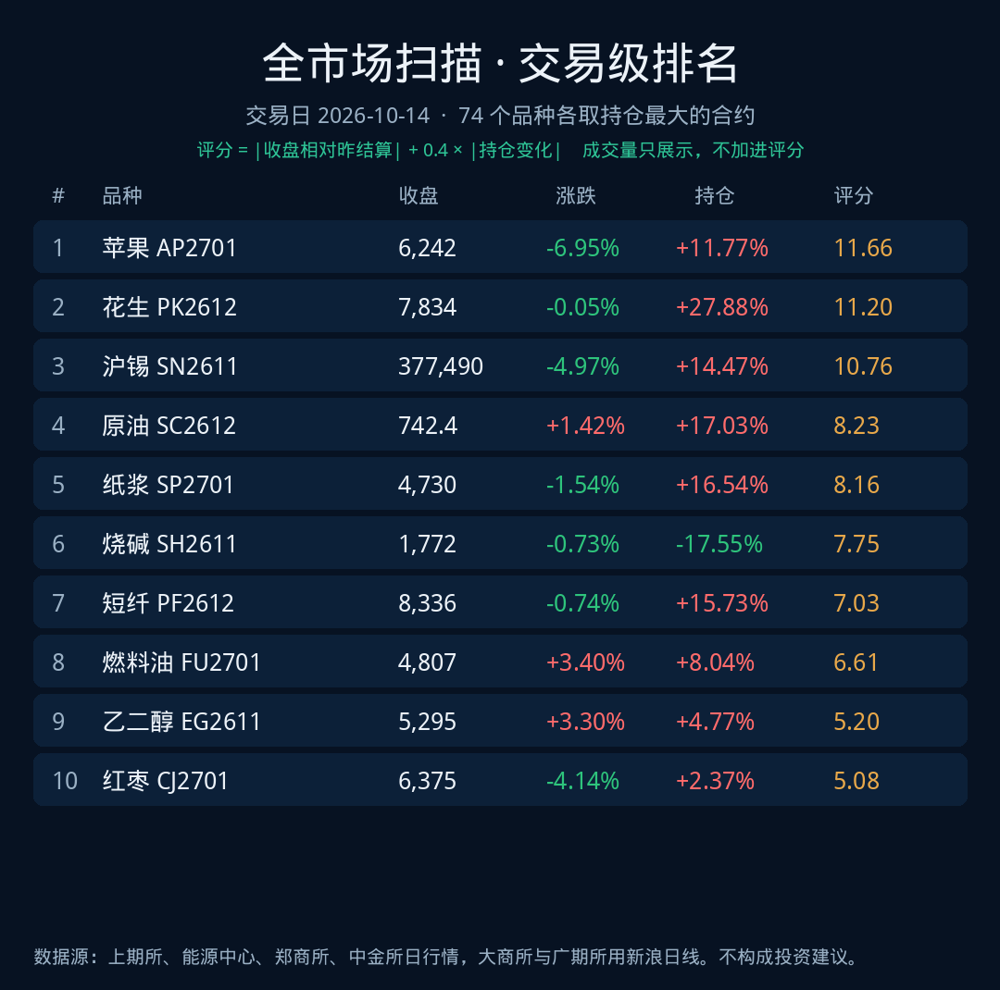
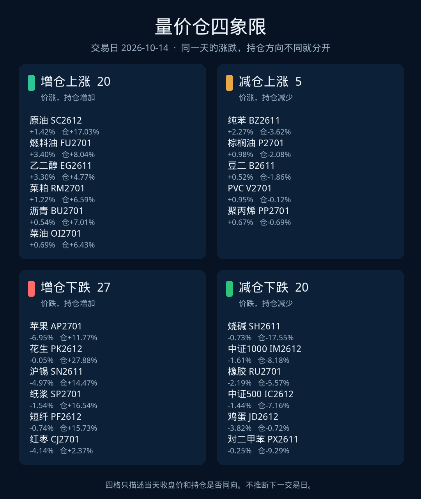
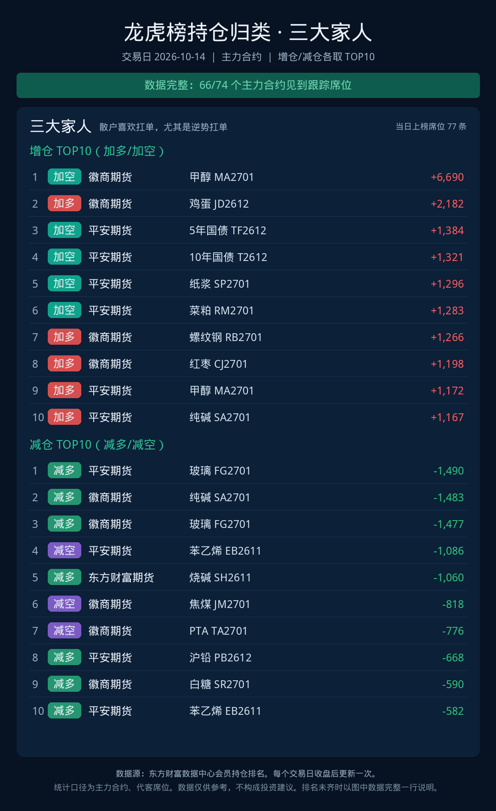
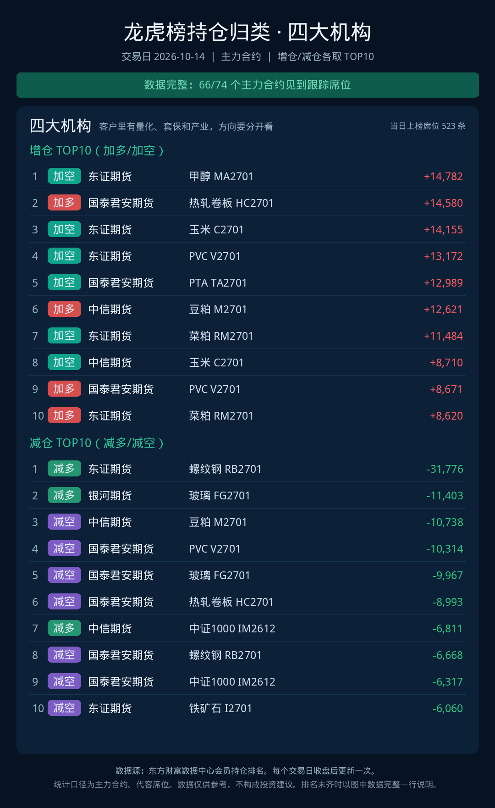
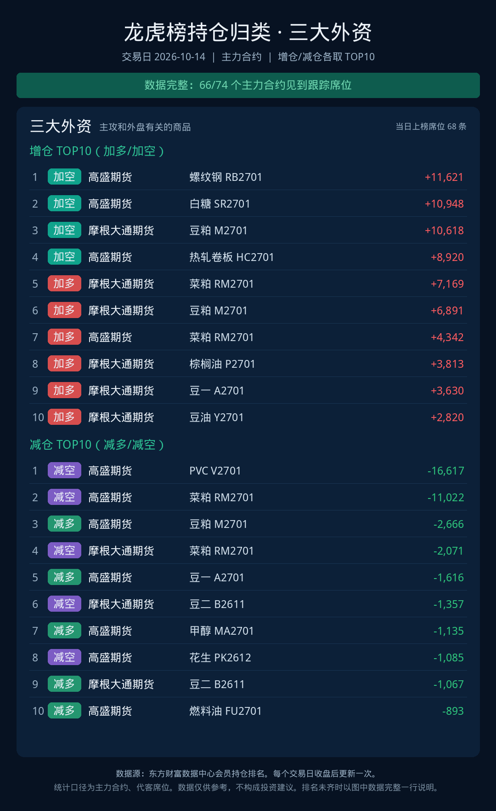

期货盘后复盘 · 每个交易日更新 1 次
2026-10-14
先看评分前 10，再看价格和持仓是否同向，最后看三组席位动了谁。评分 = |收盘相对昨结算| + 0.4 × |持仓变化|。成交量写在表里，不加进评分。不下结论，不构成投资建议。

1 全市场扫描
74 个品种，各取当天持仓最大的合约，成交量低于 5,000 手的不进榜。按评分从高到低。

| # | 品种 | 收盘 | 涨跌 | 持仓 | 成交量 | 评分 | 状态 |
|---|---|---|---|---|---|---|---|
| 1 | 苹果 AP2701 | 6,242 | -6.95% | +11.77% | 320,355 | 11.66 | 增仓下跌 |
| 2 | 花生 PK2612 | 7,834 | -0.05% | +27.88% | 125,268 | 11.20 | 增仓下跌 |
| 3 | 沪锡 SN2611 | 377,490 | -4.97% | +14.47% | 161,357 | 10.76 | 增仓下跌 |
| 4 | 原油 SC2612 | 742.4 | +1.42% | +17.03% | 75,361 | 8.23 | 增仓上涨 |
| 5 | 纸浆 SP2701 | 4,730 | -1.54% | +16.54% | 330,569 | 8.16 | 增仓下跌 |
| 6 | 烧碱 SH2611 | 1,772 | -0.73% | -17.55% | 273,114 | 7.75 | 减仓下跌 |
| 7 | 短纤 PF2612 | 8,336 | -0.74% | +15.73% | 206,005 | 7.03 | 增仓下跌 |
| 8 | 燃料油 FU2701 | 4,807 | +3.40% | +8.04% | 316,469 | 6.61 | 增仓上涨 |
| 9 | 乙二醇 EG2611 | 5,295 | +3.30% | +4.77% | 1,159,222 | 5.20 | 增仓上涨 |
| 10 | 红枣 CJ2701 | 6,375 | -4.14% | +2.37% | 319,993 | 5.08 | 增仓下跌 |
| 11 | 中证1000 IM2612 | 6,805.8 | -1.61% | -8.18% | 165,008 | 4.88 | 减仓下跌 |
| 12 | 碳酸锂 LC2701 | 100,900 | -4.34% | +1.16% | 339,357 | 4.81 | 增仓下跌 |
| 13 | 硅铁 SF2701 | 5,924 | -1.07% | +9.04% | 86,290 | 4.68 | 增仓下跌 |
| 14 | 橡胶 RU2701 | 20,065 | -2.19% | -5.57% | 546,053 | 4.42 | 减仓下跌 |
| 15 | 生猪 LH2701 | 10,425 | -2.43% | +4.73% | 138,377 | 4.32 | 增仓下跌 |
| 16 | 中证500 IC2612 | 6,874.6 | -1.44% | -7.16% | 91,022 | 4.30 | 减仓下跌 |
| 17 | 鸡蛋 JD2612 | 3,426 | -3.82% | -0.72% | 480,356 | 4.11 | 减仓下跌 |
| 18 | 对二甲苯 PX2611 | 9,692 | -0.25% | -9.29% | 160,689 | 3.96 | 减仓下跌 |
| 19 | 菜粕 RM2701 | 2,407 | +1.22% | +6.59% | 792,236 | 3.86 | 增仓上涨 |
| 20 | 上证50 IH2612 | 2,733.8 | -0.95% | -6.98% | 33,414 | 3.74 | 减仓下跌 |
| 21 | 纯苯 BZ2611 | 9,740 | +2.27% | -3.62% | 115,814 | 3.72 | 减仓上涨 |
| 22 | 白银 AG2612 | 14,289 | -2.72% | +1.87% | 311,695 | 3.46 | 增仓下跌 |
| 23 | 集运欧线 EC2611 | 2,713.5 | -1.74% | -4.15% | 11,843 | 3.40 | 减仓下跌 |
| 24 | 白糖 SR2701 | 5,456 | -1.48% | -4.71% | 499,862 | 3.36 | 减仓下跌 |
| 25 | 沥青 BU2701 | 4,473 | +0.54% | +7.01% | 147,315 | 3.34 | 增仓上涨 |
| 26 | 菜油 OI2701 | 10,466 | +0.69% | +6.43% | 290,265 | 3.26 | 增仓上涨 |
| 27 | 纯碱 SA2701 | 944 | -3.18% | +0.13% | 1,210,981 | 3.23 | 增仓下跌 |
| 28 | 沪深300 IF2612 | 4,160.6 | -1.40% | -4.27% | 60,302 | 3.11 | 减仓下跌 |
| 29 | 尿素 UR2701 | 1,667 | -2.00% | +2.76% | 167,514 | 3.10 | 增仓下跌 |
| 30 | 瓶片 PR2612 | 8,242 | -0.53% | +6.27% | 41,256 | 3.04 | 增仓下跌 |
| 31 | 玉米 C2701 | 2,216 | +0.14% | +6.89% | 416,829 | 2.89 | 增仓上涨 |
| 32 | 甲醇 MA2701 | 3,262 | +0.90% | +4.97% | 1,378,408 | 2.89 | 增仓上涨 |
| 33 | 氧化铝 AO2701 | 2,626 | -1.02% | +4.30% | 117,484 | 2.74 | 增仓下跌 |
| 34 | 铸造铝 AD2612 | 22,920 | -0.74% | +4.91% | 11,681 | 2.70 | 增仓下跌 |
| 35 | 沪锌 ZN2612 | 25,625 | -0.93% | +4.23% | 71,741 | 2.62 | 增仓下跌 |
| 36 | 焦煤 JM2701 | 1,536.5 | -1.54% | -2.49% | 506,491 | 2.53 | 减仓下跌 |
| 37 | 工业硅 SI2611 | 8,670 | +0.00% | -6.30% | 107,762 | 2.52 | 持平 |
| 38 | 20号胶 NR2612 | 17,110 | -2.40% | +0.16% | 118,036 | 2.46 | 增仓下跌 |
| 39 | 铂 PT2612 | 405.9 | -1.79% | +1.64% | 6,143 | 2.45 | 增仓下跌 |
| 40 | 2年国债 TS2612 | 102.6 | +0.01% | +6.02% | 48,181 | 2.42 | 增仓上涨 |
| 41 | 豆一 A2701 | 5,481 | -0.49% | +4.64% | 284,072 | 2.35 | 增仓下跌 |
| 42 | 丁二烯橡胶 BR2612 | 15,780 | -1.77% | +0.90% | 82,778 | 2.13 | 增仓下跌 |
| 43 | 多晶硅 PS2611 | 34,350 | -1.45% | -1.51% | 59,531 | 2.05 | 减仓下跌 |
| 44 | 低硫燃油 LU2612 | 5,940 | -0.42% | -3.83% | 139,930 | 1.95 | 减仓下跌 |
| 45 | 淀粉 CS2611 | 2,445 | -0.12% | -4.49% | 122,106 | 1.92 | 减仓下跌 |
| 46 | 棕榈油 P2701 | 9,733 | +0.98% | -2.08% | 552,788 | 1.81 | 减仓上涨 |
| 47 | 锰硅 SM2701 | 5,854 | -0.44% | +3.26% | 149,691 | 1.75 | 增仓下跌 |
| 48 | 棉纱 CY2701 | 22,105 | +0.78% | +2.33% | 12,389 | 1.71 | 增仓上涨 |
| 49 | 焦炭 J2701 | 2,000 | -1.60% | +0.03% | 26,653 | 1.61 | 增仓下跌 |
| 50 | 铁矿石 I2701 | 674 | -0.81% | +1.98% | 285,701 | 1.60 | 增仓下跌 |
| 51 | 丙烯 PL2612 | 9,698 | +0.74% | +2.15% | 38,600 | 1.60 | 增仓上涨 |
| 52 | 黄金 AU2612 | 896.6 | -0.68% | -2.24% | 175,621 | 1.58 | 减仓下跌 |
| 53 | 不锈钢 SS2612 | 13,420 | +0.11% | +3.59% | 73,298 | 1.55 | 增仓上涨 |
| 54 | 热轧卷板 HC2701 | 3,237 | -0.52% | +2.53% | 342,793 | 1.54 | 增仓下跌 |
| 55 | 5年国债 TF2612 | 106.6 | +0.00% | +3.62% | 93,368 | 1.45 | 增仓上涨 |
| 56 | 30年期国债期货 TL2612 | 118.0 | +0.19% | +3.10% | 94,810 | 1.43 | 增仓上涨 |
| 57 | 苯乙烯 EB2611 | 10,574 | +1.22% | +0.53% | 1,005,703 | 1.43 | 增仓上涨 |
| 58 | 沪铝 AL2611 | 23,285 | -0.75% | -1.42% | 133,073 | 1.31 | 减仓下跌 |
| 59 | 豆二 B2611 | 4,093 | +0.52% | -1.86% | 145,580 | 1.26 | 减仓上涨 |
| 60 | 10年国债 T2612 | 109.7 | +0.02% | +3.08% | 99,566 | 1.25 | 增仓上涨 |
| 61 | 棉花 CF2701 | 15,975 | +0.47% | +1.49% | 374,360 | 1.07 | 增仓上涨 |
| 62 | 豆油 Y2701 | 9,026 | +0.71% | +0.71% | 309,723 | 1.00 | 增仓上涨 |
| 63 | PVC V2701 | 4,912 | +0.95% | -0.12% | 1,261,935 | 0.99 | 减仓上涨 |
| 64 | 液化气 PG2611 | 7,468 | -0.41% | -1.41% | 122,489 | 0.98 | 减仓下跌 |
| 65 | 聚丙烯 PP2701 | 9,498 | +0.67% | -0.69% | 859,790 | 0.94 | 减仓上涨 |
| 66 | 玻璃 FG2701 | 856 | -0.35% | -1.33% | 1,010,652 | 0.88 | 减仓下跌 |
| 67 | PTA TA2701 | 6,584 | -0.12% | +1.79% | 925,221 | 0.84 | 增仓下跌 |
| 68 | 钯 PD2612 | 269.3 | -0.48% | +0.80% | 5,870 | 0.80 | 增仓下跌 |
| 69 | 沪铅 PB2612 | 16,115 | -0.03% | -1.70% | 44,660 | 0.71 | 减仓下跌 |
| 70 | 螺纹钢 RB2701 | 3,073 | -0.39% | -0.44% | 580,359 | 0.57 | 减仓下跌 |
| 71 | 沪镍 NI2612 | 118,530 | -0.09% | +1.12% | 33,412 | 0.54 | 增仓下跌 |
| 72 | 沪铜 CU2611 | 111,080 | +0.16% | +0.54% | 70,993 | 0.38 | 增仓上涨 |
| 73 | 塑料 L2701 | 8,949 | +0.07% | +0.01% | 683,362 | 0.07 | 增仓上涨 |
| 74 | 豆粕 M2701 | 3,373 | +0.00% | +0.00% | 1,116,938 | 0.00 | 持平 |
2 量价仓四象限
同一涨跌方向，持仓增加和持仓减少分开看。格子里是这个状态里评分最高的几个合约。

增仓上涨 · 20
价涨，持仓增加
- 原油 SC2612 +1.42% 仓+17.03%
- 燃料油 FU2701 +3.40% 仓+8.04%
- 乙二醇 EG2611 +3.30% 仓+4.77%
- 菜粕 RM2701 +1.22% 仓+6.59%
- 沥青 BU2701 +0.54% 仓+7.01%
减仓上涨 · 5
价涨，持仓减少
- 纯苯 BZ2611 +2.27% 仓-3.62%
- 棕榈油 P2701 +0.98% 仓-2.08%
- 豆二 B2611 +0.52% 仓-1.86%
- PVC V2701 +0.95% 仓-0.12%
- 聚丙烯 PP2701 +0.67% 仓-0.69%
增仓下跌 · 27
价跌，持仓增加
- 苹果 AP2701 -6.95% 仓+11.77%
- 花生 PK2612 -0.05% 仓+27.88%
- 沪锡 SN2611 -4.97% 仓+14.47%
- 纸浆 SP2701 -1.54% 仓+16.54%
- 短纤 PF2612 -0.74% 仓+15.73%
减仓下跌 · 20
价跌，持仓减少
- 烧碱 SH2611 -0.73% 仓-17.55%
- 中证1000 IM2612 -1.61% 仓-8.18%
- 橡胶 RU2701 -2.19% 仓-5.57%
- 中证500 IC2612 -1.44% 仓-7.16%
- 鸡蛋 JD2612 -3.82% 仓-0.72%
3 三组席位
主力合约上，三大家人、四大机构、三大外资当天增仓和减仓各 10 条。单位是手。



扫描和四象限来自上期所（含能源中心）、郑商所、中金所每日行情，大商所和广期所来自新浪日线。席位来自交易所公布的会员持仓排名。持仓变化相对上一交易日。休市日页面留着上一个交易日。